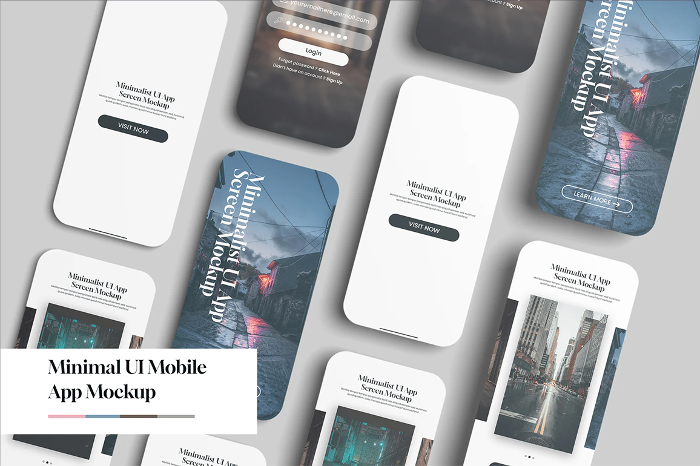

Showcasing Innovation and Impact
A portfolio is a vital window into your ability to solve complex information challenges. At UMSI, our projects span from user research to data analysis. This section presents the core project outcomes I have achieved through interdisciplinary collaboration and technical expertise.

Featured Project: UX Design Research
In a recent project, I conducted a comprehensive user experience evaluation of a campus resource access system. Through qualitative interviews and prototype testing, I proposed a series of design solutions aimed at optimizing student interaction flows. These practices not only sharpened my technical skills but also deepened my understanding of user-centered design principles.
